7. توانمندسازی یک برنامه با Ajax ASP.NET MVC
7.1. نقش AJAX در یک برنامه وب
فعلاً، مثالهای آموزشی مورد بررسی معماری زیر را دارند:
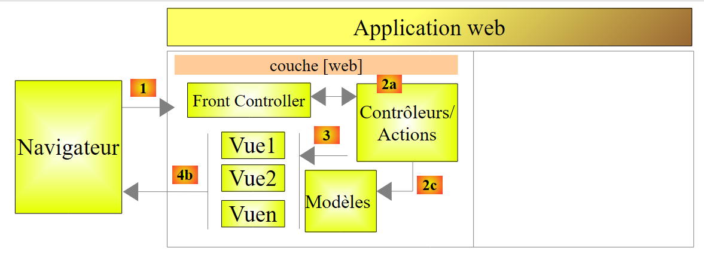 |
برای ناوبری از یک نمای [Vue1] به یک نمای [Vue2]، مرورگر:
- یک درخواست به برنامه وب ارسال میکند؛
- نما [Vue2] را دریافت کرده و به جای نما [Vue1] نمایش میدهد.
این الگوی استاندارد است:
- درخواست از مرورگر؛
- وبسرور در پاسخ به کلاینت یک نما تولید میکند؛
- مرورگر این نمای جدید را نمایش میدهد.
راه دیگری برای تعامل مرورگر و وبسرور وجود دارد: AJAX (جاوااسکریپت و XML غیرهمزمان). این در واقع شامل تعاملاتی بین نمایی است که توسط مرورگر نمایش داده میشود و وبسرور. مرورگر به انجام کاری که در آن بهترین است – نمایش یک نما – ادامه میدهد، اما اکنون توسط جاوااسکریپتی که در نمای نمایشدادهشده جاسازی شده کنترل میشود. این فرایند به شرح زیر است:
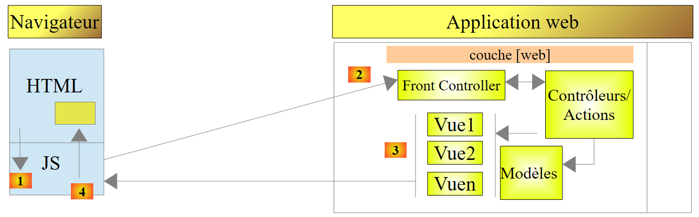 |
- در [1]، یک رویداد در صفحهای که در مرورگر نمایش داده میشود رخ میدهد (مانند کلیک روی دکمه، تغییر متن و غیره). این رویداد توسط جاوااسکریپت (JS) تعبیهشده در صفحه رهگیری میشود؛
- در [2]، کد جاوااسکریپت درخواستی HTTP را ارسال میکند، درست همانطور که مرورگر انجام میداد. این درخواست ناهمزمان است: کاربر میتواند در حالی که منتظر پاسخ به درخواست HTTP است، بدون تأخیر به تعامل با صفحه ادامه دهد. این درخواست از جریان پردازش استاندارد پیروی میکند. چیزی (یا بسیار اندک) وجود ندارد که آن را از یک درخواست استاندارد متمایز کند؛
- در [3]، یک پاسخ به کلاینت JS ارسال میشود. به جای یک نمای کامل HTML، این یک نمای جزئی HTML، یک XML یا JSON است (JavaScript نشانهٔ شیء) که ارسال میشود؛
- در [4]، جاوااسکریپت این پاسخ را بازیابی میکند و از آن برای بهروزرسانی بخشی از صفحه نمایشدادهشده HTML استفاده میکند.
از دیدگاه کاربر، نما تغییر کرده است زیرا آنچه میبیند تغییر کرده است. با این حال، هیچ بارگذاری مجدد کامل صفحه انجام نمیشود؛ بلکه تنها یک اصلاح جزئی در صفحه نمایش داده شده صورت میگیرد. این امر به روانتر و تعاملیتر شدن صفحه کمک میکند: از آنجا که صفحه بهطور کامل بارگیری مجدد نمیشود، میتوان رویدادهایی را که قبلاً قابل مدیریت نبودند، مدیریت کرد. برای مثال، ارائه فهرستی از گزینهها به کاربر همزمان با تایپ حروف در یک کادر ورودی. با تایپ هر کاراکتر جدید، یک درخواست AJAX به سرور ارسال میشود که سپس پیشنهادات بیشتری را بازمیگرداند. بدون Ajax، این نوع کمک به ورودی قبلاً غیرممکن بود. امکان بارگذاری مجدد یک صفحه جدید با تایپ هر کاراکتر وجود نداشت.
7.2. مبانی JQuery و جاوااسکریپت
ما اغلب کتابخانه جاوااسکریپت JQuery را در صفحات خود قرار دادهایم. این کتابخانه شامل خط زیر است:
<script type="text/javascript" src="~/Scripts/jquery-1.8.2.min.js"></script>
توجه: اطمینان حاصل کنید که نسخه jQuery با نسخه ویژوال استودیوی شما مطابقت دارد.
فناوری Ajax در ASP.NET MVC از JQuery استفاده میکند. ما چند اسکریپت JQuery را خودمان خواهیم نوشت. بنابراین اکنون اصول اولیه JQuery را که برای درک اسکریپتهای این فصل باید بدانید، تشریح میکنیم.
ما یک پروژه جدید، [Exemple-04]، را در داخل راهحل خود، [Exemples]، ایجاد میکنیم:
 |
برای استفاده از Ajax با ASP.NET و MVC، خط زیر باید در فایل پیکربندی [Web.config] و [1] گنجانده شود:
<appSettings>
...
<add key="UnobtrusiveJavaScriptEnabled" value="true" />
</appSettings>
خط ۳ استفاده از Ajax را در نماهای ASP.NET فعال میکند. این خط بهطور پیشفرض گنجانده شده است.
ما یک فایل به نام HTML [JQuery-01.html] را در پوشه [Content] پروژه جدید [2] ایجاد میکنیم:
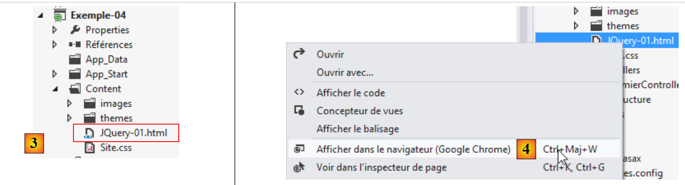 |
این فایل شامل موارد زیر خواهد بود:
<!DOCTYPE html>
<html xmlns="http://www.w3.org/1999/xhtml">
<head>
<meta http-equiv="Content-Type" content="text/html; charset=utf-8" />
<title>JQuery-01</title>
<script type="text/javascript" src="/Scripts/jquery-1.8.2.min.js"></script>
</head>
<body>
<h3>Rudiments de JQuery</h3>
<div id="element1">
Elément 1
</div>
</body>
</html>
- خط ۶: وارد کردن JQuery (نسخه را با نسخه ویژوال استودیوی خود مطابقت دهید)؛
- خطوط ۱۰–۱۲: یک عنصر صفحه با شناسه [element1]. ما قصد داریم با این عنصر آزمایش کنیم.
میتوانیم این فایل را در مرورگر گوگل کروم مشاهده کنیم: [4] و [5]:
 |
در گوگل کروم، کلید [Ctrl-Maj-I] را فشار دهید تا ابزارهای توسعهدهنده [6] باز شود. زبانه [Console] [7] به شما امکان میدهد کد جاوااسکریپت را اجرا کنید. در زیر، چند دستور جاوااسکریپت برای تایپ کردن همراه با توضیح هر یک ارائه شده است.
JS | نتیجه |
|
: مجموعه تمام عناصری را که دارای شناسه [element1] هستند بازمیگرداند؛ این مجموعه معمولاً شامل ۰ یا ۱ عنصر است، زیرا هیچ دو عناصری در یک صفحه نمیتوانند شناسه یکسانی داشته باشند (HTML). |  |
|
: متن [blabla] را به همه آیتمهای مجموعه اعمال میکند. این کار محتوای نمایش داده شده در صفحه را تغییر میدهد. |  |
|
عناصر موجود در مجموعه را پنهان میکند. متن [blabla] دیگر نمایش داده نمیشود. |  |
|
: مجموعه را دوباره نمایش میدهد. این به ما امکان میدهد ببینیم که عنصر با id [element1] دارای ویژگی CSS style='display: none;' است، که باعث پنهان شدن عنصر میشود. | |
|
: عناصر مجموعه را نمایش میدهد. متن [blabla] دوباره ظاهر میشود. این به دلیل ویژگی CSS style='display: block;' است. |  |
|
: یک ویژگی را برای همه عناصر در مجموعه تنظیم میکند. ویژگی در اینجا [style] است و مقدار آن [color: red] میباشد. متن [blabla] به رنگ قرمز درمیآید. | 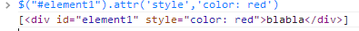  |
 | |
 |
توجه کنید که URL مرورگر در طول این عملیاتها تغییر نکرده است. هیچ ارتباطی با سرور وب برقرار نشده است. همه چیز در داخل مرورگر انجام میشود. اکنون، بیایید کد منبع صفحه را مشاهده کنیم:
 |
<!DOCTYPE html>
<html xmlns="http://www.w3.org/1999/xhtml">
<head>
<meta http-equiv="Content-Type" content="text/html; charset=utf-8" />
<title>JQuery-01</title>
<script type="text/javascript" src="/Scripts/jquery-1.8.2.min.js"></script>
</head>
<body>
<h3>Rudiments de JQuery</h3>
<div id="element1">
Elément 1
</div>
</body>
</html>
این متن اصلی است. این متن تغییرات اعمالشده توسط ما بر روی عنصر در خطوط ۱۰ تا ۱۲ را منعکس نمیکند. هنگام اشکالزدایی جاوااسکریپت، مهم است که این موضوع را در نظر داشته باشید. بنابراین، مشاهده کد منبع صفحه نمایشدادهشده اغلب بیفایده است. برای مشاهده کد منبع صفحه فعلی، مراحل زیر را دنبال کنید:
 |
اکنون به اندازه کافی میدانیم تا اسکریپتهای JS را که در ادامه میآیند، درک کنیم.
7.3. بهروزرسانی یک صفحه با فید HTML
7.3.1. دیدها
اکنون اپلیکیشن زیر را بررسی خواهیم کرد:
 |
- در [1]، زمان بارگذاری صفحه؛
- در [2]، چهار عمل اصلی روی دو عدد حقیقی A و B انجام میشود؛
- در [3]، پاسخ سرور در بخشی از صفحه نمایش داده میشود؛
- در [4]، زمان محاسبه. این با زمان بارگذاری صفحه [5] متفاوت است. مورد دوم برابر با [1] است که نشان میدهد ناحیه [6] دوباره بارگذاری نشده است. علاوه بر این، URL و [7] صفحه تغییر نکردهاند.
7.3.2. کنترلر، اکشنها، مدل و ویو
ما یک کنترلر به نام [Premier] ایجاد میکنیم:
 |
برای نمایش نمای اولیه، اکشن زیر را ایجاد میکنیم: [Action01Get]:
[HttpGet]
public ViewResult Action01Get()
{
ViewModel01 modèle = new ViewModel01();
modèle.HeureChargement = DateTime.Now.ToString("hh:mm:ss");
return View(modèle);
}
- خط ۴: نمونهسازی مدل نما؛
- خط ۵: مقداردهی اولیه زمان بارگذاری نما؛
- خط ۶: نمایش نما [Action10Get.cshtml] و مدل آن.
مدل [ViewModel01] به شرح زیر است:
 |
using System;
using System.ComponentModel.DataAnnotations;
using System.Web.Mvc;
namespace Exemple_04.Models
{
[Bind(Exclude = "AplusB, AmoinsB, AmultipliéparB, AdiviséparB, Erreur, HeureChargement, HeureCalcul")]
public class ViewModel01
{
// فرم
[Required(ErrorMessage="Donnée requise")]
[Display(Name="Valeur de A")]
[Range(0, Double.MaxValue, ErrorMessage = "Tapez un nombre positif ou nul")]
public double A { get; set; }
[Required(ErrorMessage = "Donnée requise")]
[Display(Name = "Valeur de B")]
[Range(0, Double.MaxValue, ErrorMessage="Tapez un nombre positif ou nul")]
public double B { get; set; }
// نتایج
public string AplusB { get; set; }
public string AmoinsB { get; set; }
public string AmultipliéparB { get; set; }
public string AdiviséparB { get; set; }
public string Erreur { get; set; }
public string HeureChargement { get; set; }
public string HeureCalcul { get; set; }
}
}
- خطوط ۱۱–۱۴: مقدار A فرم؛
- خطوط ۱۵–۱۸: مقدار B از فرم؛
- ردههای ۲۱–۲۴: نتایج چهار عمل اصلی روی A و B؛
- خط ۲۵: متن هرگونه خطا؛
- خط ۲۶: زمان بارگذاری نما در مرورگر؛
- خط ۲۷: زمانی که فیلدهای خطوط ۲۱–۲۴ محاسبه شدند؛
- خط ۷: این قالب نما همچنین یک قالب اقدام است. فیلدهایی که توسط مرورگر ارسال نشدهاند از قالب اقدام حذف میشوند.
نما [Action01Get.cshtml] به شرح زیر است:
 |
@model Exemple_04.Models.ViewModel01
@{
Layout = null;
AjaxOptions ajaxOpts = new AjaxOptions
{
UpdateTargetId = "résultats",
HttpMethod = "post",
Url = Url.Action("Action01Post"),
LoadingElementId = "loading",
LoadingElementDuration = 1000
};
}
<!DOCTYPE html>
<html lang="fr-FR">
<head>
<meta name="viewport" content="width=device-width" />
<title>Ajax-01</title>
<link rel="stylesheet" href="~/Content/Site.css" />
<script type="text/javascript" src="~/Scripts/jquery-1.8.2.min.js"></script>
<script type="text/javascript" src="~/Scripts/jquery.validate.min.js"></script>
<script type="text/javascript" src="~/Scripts/jquery.validate.unobtrusive.min.js"></script>
<script type="text/javascript" src="~/Scripts/globalize/globalize.js"></script>
<script type="text/javascript" src="~/Scripts/globalize/cultures/globalize.culture.fr-FR.js"></script>
<script type="text/javascript" src="~/Scripts/globalize/cultures/globalize.culture.en-US.js"></script>
<script type="text/javascript" src="~/Scripts/jquery.unobtrusive-ajax.js"></script>
<script type="text/javascript" src="~/Scripts/myScripts-01.js"></script>
</head>
<body>
<h2>Ajax - 01</h2>
<p><strong>Heure de chargement : @Model.HeureChargement</strong></p>
<h4>Opérations arithmétiques sur deux nombres réels A et B positifs ou nuls</h4>
@using (Ajax.BeginForm("Action01Post", null, ajaxOpts, new { id = "formulaire" }))
{
<table>
<thead>
<tr>
<th>@Html.LabelFor(m => m.A)</th>
<th>@Html.LabelFor(m => m.B)</th>
</tr>
</thead>
<tbody>
<tr>
<td>@Html.TextBoxFor(m => m.A)</td>
<td>@Html.TextBoxFor(m => m.B)</td>
</tr>
<tr>
<td>@Html.ValidationMessageFor(m => m.A)</td>
<td>@Html.ValidationMessageFor(m => m.B)</td>
</tr>
</tbody>
</table>
<p>
<input type="submit" value="Calculer" />
<img id="loading" style="display: none" src="~/Content/images/indicator.gif" />
<a href="javascript:postForm()">Calculer</a>
</p>
}
<hr />
<div id="résultats" />
</body>
</html>
- خط ۱: این نما بر اساس نوع [ViewModel01] است؛
- خط ۲۱: JQuery برای هر دو اعتبارسنجی و Ajax الزامی است؛
- خطوط ۲۲–۲۳: کتابخانههای اعتبارسنجی؛
- خطوط ۲۴–۲۶: کتابخانههای بینالمللیسازی؛
- خط ۲۷: کتابخانهٔ Ajax؛
- خط ۲۸: یک کتابخانهٔ جاوااسکریپت محلی؛
- خط ۳۳: زمان بارگذاری نما را نمایش میدهد؛
- خط ۳۵: یک فرم Ajax – بعداً به این مورد باز خواهیم گشت؛
- خطوط ۴۰–۴۱: برچسبها برای فیلدهای ورودی اعداد A و B؛
- خطوط ۴۶–۴۷: فیلدهای ورودی برای اعداد A و B;
- خطوط ۵۰–۵۱: پیامهای خطا برای فیلدهای ورودی اعداد A و B؛
- خط ۵۶: دکمهای که فرم را ارسال میکند. این کار از طریق یک درخواست آژاکس انجام خواهد شد؛
- خط ۵۷: یک تصویر در حال بارگذاری که در حین انجام درخواست Ajax نمایش داده میشود؛
- خط ۵۸: یک لینک برای ارسال فرم از طریق درخواست ایجکس؛
- خط ۶۲: یک تگ با شناسه [résultats]. این همان جایی است که فید HTML بازگشتی از سرور وب را قرار میدهیم.
این نما صفحه زیر را نمایش میدهد:
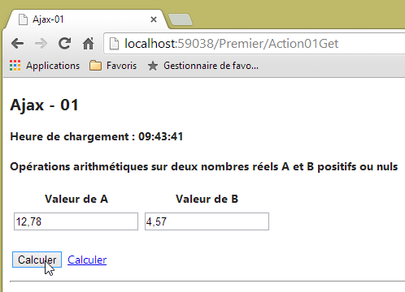 |
حال بیایید نگاهی به کدی بیندازیم که فرم را از طریق AJAX مدیریت میکند:
...
@{
Layout = null;
AjaxOptions ajaxOpts = new AjaxOptions
{
UpdateTargetId = "résultats",
HttpMethod = "post",
Url = Url.Action("Action01Post"),
LoadingElementId = "loading",
LoadingElementDuration = 1000
};
}
...
@using (Ajax.BeginForm("Action01Post", null, ajaxOpts, new { id = "formulaire" }))
{
....
<p>
<input type="submit" value="Calculer" />
<img id="loading" style="display: none" src="~/Content/images/indicator.gif" />
<a href="javascript:postForm()">Calculer</a>
</p>
}
...
<div id="résultats" />
- خط ۱۵: به جای استفاده از [@Html.BeginForm]، از [@Ajax.BeginForm] استفاده میکنیم. این متد از چندین اورلود پشتیبانی میکند. اورلود مورد استفاده، امضای زیر را دارد:
Ajax.BeginForm(string ActionName, RouteValueDictionary routeValues, AjaxOptions ajaxOptions, IDictionary<string,object> htmlAttributes)
در اینجا، ما از پارامترهای واقعی زیر استفاده میکنیم:
Action01Post: نام اکشنی که POST فرم را پردازش خواهد کرد،
null: هیچ اطلاعات مسیری برای ارائه وجود ندارد،
ajaxOpts: گزینههای فراخوانی Ajax. اینها در خطوط ۶–۱۰ تعریف شدهاند،
new { id = "form" }: برای تخصیص ویژگی [id='formulaire'] به تگ <form> تولید شده؛
گزینههای Ajax مورد استفاده به شرح زیر است:
- خط ۸: هدف URL در درخواست Ajax HTTP؛
- خط ۷: متد درخواست Ajax HTTP؛
- خط ۶: شناسه ناحیه صفحه که با پاسخ به درخواست Ajax بهروزرسانی خواهد شد؛
- خط ۹: شناسه (ID) بخش صفحه که در طول درخواست آژاکس نمایش داده میشود – معمولاً یک تصویر در حال بارگذاری. در اینجا، خط ۲۰ نمایش داده خواهد شد. این خط حاوی یک تصویر متحرک است که حالت بارگذاری را نشان میدهد. در ابتدا، این تصویر توسط استایل [display : none] پنهان میشود؛
- خط ۱۰: تأخیر به میلیثانیه قبل از نمایش تصویر متحرک؛ در اینجا، ۱ ثانیه.
کد HTML تولید شده توسط فرم Ajax به شرح زیر است:
<form action="/Premier/Action01Post" data-ajax="true" data-ajax-loading="#loading" data-ajax-loading-duration="1000" data-ajax-method="post" data-ajax-mode="replace" data-ajax-update="#résultats" data-ajax-url="/Premier/Action01Post" id="formulaire" method="post"> <table>
...
<p>
<input type="submit" value="Calculer" />
<img id="loading" style="display: none" src="/Content/images/indicator.gif" />
<a href="javascript:postForm()">Calculer</a>
</p>
</form>
<hr />
<div id="résultats" />
- خط ۱: تگ <form> تولیدشده. توجه کنید به ویژگیهای [data-ajax-attr] که مقادیر فیلدها را در ابجکت از نوع [AjaxOptions] که با درخواست Ajax مرتبط بود، منعکس میکنند. این ویژگیها توسط کتابخانه Ajax مدیریت میشوند. بدون آنها، تگ <form> به این صورت درمیآید:
<form action="/Premier/Action01Post" id="formulaire" method="post">
...
<p>
<input type="submit" value="Calculer" />
<img id="loading" style="display: none" src="/Content/images/indicator.gif" />
<a href="javascript:postForm()">Calculer</a>
</p>
</form>
این در واقع یک فرم استاندارد HTML است. این کدی است که در صورتی که کاربر جاوااسکریپت را در مرورگر خود غیرفعال کند، اجرا خواهد شد. خطوط ۵–۶ در این صورت بلااستفاده میباشند.
7.3.3. عمل [Action01Post]
عمل [Action01Post] که درخواست Ajax HTTP را مدیریت میکند، به شرح زیر است:
[HttpPost]
public PartialViewResult Action01Post(FormCollection postedData, SessionModel session)
{
// صف شبیهسازی
Thread.Sleep(2000);
// نمادسازی مدل عملی
ViewModel01 modèle = new ViewModel01();
//زمان محاسبه
modèle.HeureCalcul = DateTime.Now.ToString("hh:mm:ss");
//بهروزرسانی مدل
TryUpdateModel(modèle, postedData);
if (!ModelState.IsValid)
{
// یک خطا بازگردانده میشود
modèle.Erreur = getErrorMessagesFor(ModelState);
return PartialView("Action01Error", modèle);
}
// هر بار جفت، یک خطا شبیهسازی میشود
int val = session.Randomizer.Next(2);
if (val == 0)
{
modèle.Erreur = "[erreur aléatoire]";
return PartialView("Action01Error", modèle);
}
//محاسبات
modèle.AplusB = string.Format("{0}", modèle.A + modèle.B);
modèle.AmoinsB = string.Format("{0}", modèle.A - modèle.B);
modèle.AmultipliéparB = string.Format("{0}", modèle.A * modèle.B);
modèle.AdiviséparB = string.Format("{0}", modèle.A / modèle.B);
// نما
return PartialView("Action01Success", modèle);
}
- خط ۱: این اقدام تنها یک [POST] را پردازش میکند؛
- خط ۲: آن را بهعنوان قالب اقدام زیر میپذیرد:
- [FormCollection postedData]: تمام مقادیری که توسط درخواست Ajax POST ارسال شدهاند،
- [SessionModel session]: عناصر جلسه. در اینجا از تکنیکی که در بخش 4.10 شرح داده شده است، استفاده میشود؛
- خط ۲: اقدام به جای یک صفحه کامل HTML، یک قطعه HTML را بازمیگرداند؛
- خط ۵: به صورت مصنوعی، برای شبیهسازی یک عمل طولانی Ajax، به مدت دو ثانیه مکث میکنیم؛
- خط ۷: یک مدل از نوع [ViewModel01] نمونه سازی میشود؛
- خط ۹: زمان محاسبه مقداردهی اولیه میشود؛
- خط ۱۱: تلاشی برای بهروزرسانی مدل [ViewModel01] با مقادیر ارسالشده انجام میشود. توجه داشته باشید که از این دو وجود دارد: مقادیر اعداد A و B؛
- خط ۱۲: موفقیت یا عدم موفقیت این بهروزرسانی بررسی میشود؛
- خط ۱۵: در صورت بروز خطا، فیلد [Erreur] در مدل پر میشود؛
- خط ۱۶: یک نمای جزئی [Action01Error.cshtml] با استفاده از مدل [ViewModel01] بازگردانده میشود؛
- خطوط ۱۹–۲۴: در هر بار دوم، یک خطا شبیهسازی میشود؛
- خط ۱۹: یک عدد صحیح تصادفی در بازه [0,1] تولید میشود. مولد عدد تصادفی از جلسه گرفته میشود؛
- خط ۲۰: اگر مقدار تولیدشده ۰ باشد، یک خطا شبیهسازی میشود؛
- خط ۲۲: پیام خطا در قالب درج میشود؛
- خط ۲۳: یک نمای جزئی [Action01Error.cshtml] با استفاده از قالب [ViewModel01] رندر میشود؛
- خطوط ۲۶–۲۹: محاسبات عددی روی اعداد A و B انجام میشود و نتایج به صورت رشتههای کاراکتری در قالب قرار میگیرند؛
- خط ۳۱: یک نمای جزئی [Action01Success.cshtml] بازگردانده میشود که از قالب [ViewModel01] استفاده میکند؛
7.3.4. نما [Action01Error]
نما [Action01Error.cshtml] به شرح زیر است:
@model Exemple_04.Models.ViewModel01
<h4>Résultats</h4>
<p><strong>Heure de calcul : @Model.HeureCalcul</strong></p>
<p style="color: red;">Une erreur s'est produite : @Model.Erreur</p>
شایان ذکر است که این فید جزئی HTML در پاسخ به درخواست ایجکس HTTP از نوع POST ارسال شده و در ناحیهای با شناسه [résultats] در صفحه قرار داده میشود. تمام این اطلاعات از پیکربندی Ajax مورد استفاده در صفحه اصلی [Action01Get.cshtml] استخراج شده است:
@model Exemple_04.Models.ViewModel01
@{
Layout = null;
AjaxOptions ajaxOpts = new AjaxOptions
{
UpdateTargetId = "résultats",
HttpMethod = "post",
Url = Url.Action("Action01Post"),
LoadingElementId = "loading",
LoadingElementDuration = 1000
};
}
در اینجا مثالی از یک پاسخ حاوی خطا آورده شده است:
 |
7.3.5. نما [Action01Success]
نما [Action01Success.cshtml] به شرح زیر است:
@model Exemple_04.Models.ViewModel01
<h4>Résultats</h4>
<p><strong>Heure de calcul : @Model.HeureCalcul</strong></p>
<p>A+B=@Model.AplusB</p>
<p>A-B=@Model.AmoinsB</p>
<p>A*B=@Model.AmultipliéparB</p>
<p>A/B=@Model.AdiviséparB</p>
بار دیگر، این فید جزئی HTML در پاسخ به درخواست Ajax HTTP از نوع POST ارسال شده و در ناحیه با id [résultats] در صفحه قرار داده میشود:
 |
7.3.6. مدیریت G ession
ما مشاهده کردهایم که [Action01Post] از جلسه استفاده میکند. قالب جلسه از نوع زیر [SessionModel] است:
using System;
namespace Exemple_03.Models
{
public class SessionModel
{
public Random Randomizer { get; set; }
}
}
جلسه در [Global.asax] آغاز میشود:
// جلسه
protected void Session_Start()
{
SessionModel sessionModel=new SessionModel();
sessionModel.Randomizer=new Random(DateTime.Now.Millisecond);
Session["data"] = sessionModel;
}
این جلسه به یک قالب در [Application_Start] مرتبط است:
protected void Application_Start()
{
...
// بستهبندهای مدل
ModelBinders.Binders.Add(typeof(SessionModel), new SessionModelBinder());
}
کلاس [SessionModelBinder] تعریف شده است.
7.3.7. مدیریت تصویر نگهدارندهٔ جای خالی
@model Exemple_04.Models.ViewModel01
@{
Layout = null;
AjaxOptions ajaxOpts = new AjaxOptions
{
...
LoadingElementId = "loading",
LoadingElementDuration = 1000
};
}
...
<body>
...
@using (Ajax.BeginForm("Action01Post", null, ajaxOpts, new { id = "formulaire" }))
{
...
<p>
<input type="submit" value="Calculer" />
<img id="loading" style="display: none" src="~/Content/images/indicator.gif" />
<a href="javascript:postForm()">Calculer</a>
</p>
}
...
وقتی درخواست Ajax آغاز میشود، ناحیه با شناسه [loading] در خط ۷ پس از یک ثانیه ([ligne 8]) نمایش داده میشود. این ناحیه همان تصویری است که در خط ۲۱ قرار دارد و در ابتدا پنهان بود. این منجر به رابط کاربری زیر میشود:
 |
7.3.8. پردازش لینک [Calculer]
بیایید لینک [Calculer] را در صفحه اصلی [Action01Get.cshtml] بررسی کنیم:
<head>
<meta name="viewport" content="width=device-width" />
<title>Ajax-01</title>
...
<script type="text/javascript" src="~/Scripts/myScripts-01.js"></script>
</head>
<body>
<h2>Ajax - 01</h2>
<p><strong>Heure de chargement : @Model.HeureChargement</strong></p>
<h4>Opérations arithmétiques sur deux nombres réels A et B positifs ou nuls</h4>
@using (Ajax.BeginForm("Action01Post", null, ajaxOpts, new { id = "formulaire" }))
{
...
<p>
<input type="submit" value="Calculer" />
<img id="loading" style="display: none" src="~/Content/images/indicator.gif" />
<a href="javascript:postForm()">Calculer</a>
</p>
}
<hr />
<div id="résultats" />
- خط ۱۸: کلیک بر روی لینک [Calculer] باعث اجرای تابع JS [postForm] میشود. این در فایل [myScripts-01.js] در خط ۵ تعریف شده است. اسکریپت به شرح زیر است:
 |
function postForm() {
// ما یک فراخوانی دستی Ajax با استفاده از JQuery انجام میدهیم
var loading = $("#loading");
var formulaire = $("#formulaire");
var résultats = $('#results');
$.ajax({
url: '/Premier/Action01Post',
type: 'POST',
data: formulaire.serialize(),
dataType: 'html',
begin: loading.show(),
success: function (data) {
loading.hide()
résultats.html(data);
}
})
}
// http://blog.instance-factory.com/?p=268
$.validator.methods.number = function (value, element) {
return this.optional(element) ||
!isNaN(Globalize.parseFloat(value));
}
$.validator.methods.date = function (value, element) {
return this.optional(element) ||
!isNaN(Globalize.parseDate(value));
}
jQuery.extend(jQuery.validator.methods, {
range: function (value, element, param) {
//از افزونه Globalisation برای تجزیه مقدار استفاده کنید
var val = Globalize.parseFloat(value);
return this.optional(element) || (
val >= param[0] && val <= param[1]);
}
});
توابع در خطوط ۱۹–۳۷ قبلاً در بخش ۶.۱ مورد بحث قرار گرفتهاند. آنها مسئول بینالمللیسازی صفحات هستند. ما در اینجا آنها را مجدداً بررسی نمیکنیم. در خطوط 1–17، ما بهصورت دستی فراخوانی Ajax را انجام میدهیم که در مورد دکمه [Calculer] قبلاً توسط کتابخانه Ajax پروژه مدیریت میشد. برای این کار، از کتابخانه JQuery مرتبط با پروژه استفاده میکنیم.
- خط ۳: مرجعی به کامپوننت با شناسه [loading]. [$("#loading")] مجموعه عناصری را که شناسه [loading] را دارند بازمیگرداند. تنها یک مورد وجود دارد؛
- خط ۴: مرجعی به کامپوننت با شناسه [formulaire];
- خط ۵: مرجعی به کامپوننت با شناسه [résultats];
- خط ۶: فراخوانی Ajax به همراه گزینههای آن؛
- خط ۷: هدف URL فراخوانی Ajax؛
- خط ۸: متد HTTP استفاده شده؛
- خط ۹: دادههای در حال ارسال. [formulaire.serialize] رشته [A=val1&B=val2] را از POST فرم با شناسه [formulaire] ایجاد میکند؛
- خط ۱۰: نوع دادهای که در بازگشت انتظار میرود. ما میدانیم که سرور یک جریان HTML را بازخواهد گرداند؛
- خط ۱۱: متدی که هنگام شروع درخواست باید اجرا شود. در اینجا، مشخص میکنیم که کامپوننت با شناسه [loading] باید نمایش داده شود. این انیمیشن بارگذاری است؛
- خط ۱۲: متدی که در صورت موفقیت درخواست Ajax باید اجرا شود. پارامتر [data] پاسخ کامل از سرور است. ما میدانیم که این یک جریان HTML است؛
- خط ۱۳: نشانگر بارگذاری پنهان میشود؛
- خط ۱۴: کامپوننت با شناسه [résultats] با مقدار HTML از پارامتر [data] بهروزرسانی میشود.
از خوانندگان دعوت میشود تا لینک [Calculer] را آزمایش کنند. این لینک به جز یک ناهنجاری در ، به همان شیوهای عمل میکند که دکمه [Calculer] عمل میکند. پس از استفاده از این لینک، میتوان مقادیر نامعتبر برای A و B را ارسال کرد:
 |
- در [1] و [2]، مقادیر نامعتبر وارد شدند. این موارد توسط اعتبارسنجهای سمت کلاینت علامتگذاری میشوند؛
- در [3]، ما روی لینک [Calculer] کلیک کردیم؛
- در [4]، یک [POST] وجود داشت، در حالی که پاسخ دریافتی [4] است.
وقتی مقادیر نامعتبر هستند و دکمه [Calculer] کلیک میشود، درخواست [POST] به سرور ارسال نمیشود. در همین سناریو، با لینک [Calculer]، درخواست [POST] به سرور ارسال میشود. بنابراین، یک رفتار در دکمه [Calculer] وجود دارد که ما نتوانستهایم آن را با لینک [Calculer] بازتولید کنیم. به جای تلاش برای حل این مشکل در حال حاضر، ما آن را برای یک مثال بعدی میگذاریم که همچنین یک مشکل اعتبارسنجی دیگر در سمت کلاینت را نیز نشان خواهد داد.
7.4. بهروزرسانی یک صفحه HTML با یک فید JSON
در مثال قبلی، سرور وب به درخواست AJAX HTTP با یک پاسخ HTML پاسخ داد. این پاسخ حاوی دادههایی بود که با قالببندی HTML همراه شده بود. ما پیشنهاد میکنیم مثال قبلی را مجدداً بررسی کنیم، این بار با استفاده از پاسخهای JSON (JavaScript نشانهگذاری شیء) که تنها شامل دادهها هستند. مزیت این روش این است که بایتهای کمتری منتقل میشوند.
7.4.1. عمل [Action02Get]
عمل [Action02Get] نقطه ورود به برنامه جدید خواهد بود. کد آن به شرح زیر است:
@model Exemple_04.Models.ViewModel02
@{
Layout = null;
AjaxOptions ajaxOpts = new AjaxOptions
{
HttpMethod = "post",
Url = Url.Action("Action02Post"),
LoadingElementId = "loading",
LoadingElementDuration = 1000,
OnBegin = "OnBegin",
OnFailure = "OnFailure",
OnSuccess = "OnSuccess",
OnComplete = "OnComplete"
};
}
<!DOCTYPE html>
<html lang="fr-FR">
<head>
<meta name="viewport" content="width=device-width" />
<title>Ajax-02</title>
....
<script type="text/javascript" src="~/Scripts/myScripts-02.js"></script>
</head>
<body>
<h2>Ajax - 02</h2>
<p><strong>Heure de chargement : @Model.HeureChargement</strong></p>
<h4>Opérations arithmétiques sur deux nombres réels A et B positifs ou nuls</h4>
@using (Ajax.BeginForm("Action02Post", null, ajaxOpts, new { id = "formulaire" }))
{
...
<p>
<input type="submit" value="Calculer" />
<img id="loading" style="display: none" src="~/Content/images/indicator.gif" />
<a href="javascript:postForm()">Calculer</a>
</p>
}
<hr />
<div id="entete">
<h4>Résultats</h4>
<p><strong>Heure de calcul : <span id="heureCalcul"/></strong></p>
</div>
<div id="résultats">
<p>A+B=<span id="AplusB"/></p>
<p>A-B=<span id="AmoinsB"/></p>
<p>A*B=<span id="AmultipliéparB"/></p>
<p>A/B=<span id="AdiviséparB"/></p>
</div>
<div id="erreur">
<p style="color: red;">Une erreur s'est produite : <span id="msg"/></p>
</div>
</body>
</html>
- خطوط ۴–۱۴: گزینههای فراخوانی Ajax؛
- خط ۱۰: تابع JS که هنگام شروع درخواست اجرا میشود. این تابع در فایل JS که در خط ۲۴ به آن ارجاع شده است، تعریف شده است؛
- خط ۱۱: تابع JS که در صورت ناموفق بودن درخواست اجرا میشود؛
- خط ۱۲: تابع JS که در صورت موفقیت درخواست اجرا شود؛
- خط ۱۳: تابع JS که پس از بازگشت نتیجه درخواست Ajax (ناکامی یا موفقیت) اجرا میشود؛
- خطوط ۴۰–۴۳: یک ناحیه با شناسه [entete];
- خطوط 44–49: یک ناحیه با شناسه [résultats]. این ناحیه نتایج چهار عمل اصلی را نمایش میدهد؛
- خطوط ۵۰–۵۲: یک ناحیه با شناسه [erreur]. این ناحیه هرگونه پیام خطا را نمایش خواهد داد.
7.4.2. اقدام [Action02Post]
درخواست Ajax توسط اقدام زیر [Action02Post] پردازش میشود:
[HttpPost]
public JsonResult Action02Post(FormCollection postedData, SessionModel session)
{
// شبیهسازی در انتظار
Thread.Sleep(2000);
//اعتبارسنجی مدل
ViewModel02 modèle = new ViewModel02();
// زمانهای بارگذاری و محاسبه
string HeureChargement = DateTime.Now.ToString("hh:mm:ss");
string HeureCalcul = DateTime.Now.ToString("hh:mm:ss");
// بهروزرسانی مدل
TryUpdateModel(modèle, postedData);
if (!ModelState.IsValid)
{
//یک خطا بازگردانده میشود
return Json(new { Erreur = getErrorMessagesFor(ModelState), HeureCalcul = HeureCalcul });
}
//هر بار دیگر، یک خطا شبیهسازی میشود
int val = session.Randomizer.Next(2);
if (val == 0)
{
//خطایی بازگردانده میشود
return Json(new { Erreur = "[erreur aléatoire]", HeureCalcul = HeureCalcul });
}
//محاسبات
string AplusB = string.Format("{0}", modèle.A + modèle.B);
string AmoinsB = string.Format("{0}", modèle.A - modèle.B);
string AmultipliéparB = string.Format("{0}", modèle.A * modèle.B);
string AdiviséparB = string.Format("{0}", modèle.A / modèle.B);
//نتایج بازگردانده میشوند
return Json(new { Erreur = "", AplusB = AplusB, AmoinsB = AmoinsB, AmultipliéparB = AmultipliéparB, AdiviséparB = AdiviséparB, HeureCalcul = HeureCalcul });
}
- خط ۲: این متد یک نوع [JsonResult] را بازمیگرداند، یعنی متن در قالب JSON؛
- خط ۱۶: اطلاعات به صورت یک نمونه کلاس ناشناس که به صورت JSON سریالی شده است، بازگردانده میشود. متد [getErrorMessagesFor] قبلاً توضیح داده شده است. رشته JSON که به مرورگر ارسال میشود، شکل زیر را خواهد داشت:
- خط ۳۱: همین رویکرد برای نتایج محاسباتی نیز اعمال میشود. این بار، رشتهای که با مقدار JSON به مرورگر ارسال میشود، شکل زیر را خواهد داشت:
{"Erreur":"","AplusB":"4","AmoinsB":"-2","AmultipliéparB":"3","AdiviséparB":"0,333333333333333","HeureCalcul":"05:52:17"}
7.4.3. کد جاوااسکریپت سمت کلاینت
بیایید پیکربندی فراخوانی Ajax در صفحهی HTML که به مرورگر کلاینت ارسال شده است را به یاد بیاوریم:
AjaxOptions ajaxOpts = new AjaxOptions
{
HttpMethod = "post",
Url = Url.Action("Action02Post"),
LoadingElementId = "loading",
LoadingElementDuration = 1000,
OnBegin = "OnBegin",
OnFailure = "OnFailure",
OnSuccess = "OnSuccess",
OnComplete = "OnComplete"
};
توابع JS که در خطوط ۷–۱۰ (سمت راست علامت =) به آنها ارجاع شده، در فایل زیر، [myScripts-02.js]، تعریف شدهاند:
// دادههای کلی
var entete;
var loading;
var résultats;
var erreur;
var heureCalcul;
var msg;
var AplusB;
var AmoinsB;
var AmultipliéparB;
var AdiviséparB;
var formulaire;
...
function postForm() {
...
}
// هنگامی که سند بارگذاری میشود
$(document).ready(function () {
formulaire = $("#formulaire");
entete = $("#entete");
loading = $("#loading");
erreur = $("#erreur");
résultats = $('#نتایج');
heureCalcul = $("#heureCalcul");
msg = $("#msg");
AplusB = $("#AplusB");
AmoinsB = $("#AmoinsB");
AmultipliéparB = $("#AmultipliéparB");
AdiviséparB = $("#AdiviséparB");
// کش کردن برخی از عناصر صفحه
entete.hide();
résultats.hide();
erreur.hide();
});
// شروع
function OnBegin() {
....
}
// پایان درخواست
function OnComplete() {
...
}
// موفقیت
function OnSuccess(data) {
....
}
// خطا
function OnFailure(request, error) {
...
}
- خط ۱۹: تابع JS پس از اتمام بارگذاری صفحه در مرورگر، اجرا میشود؛
- خطوط ۲۰–۳۰: ارجاعات به تمام اجزای مورد نظر صفحه بازیابی میشوند. جستجو برای یک جزء در یک صفحه هزینه دارد، بنابراین ترجیح داده میشود این کار فقط یک بار انجام شود؛
- خطوط ۳۳–۳۵: کامپوننتهای [entete]، [résultats] و [loading] پنهان میشوند؛
وقتی درخواست Ajax آغاز میشود، تابع زیر اجرا میشود:
// شروع
function OnBegin() {
// چراغ نشانگر آمادهبهکار روشن است
loading.show();
// کش کردن برخی از عناصر صفحه
entete.hide();
résultats.hide();
erreur.hide();
}
- خط ۴: کامپوننت [loading] نمایش داده میشود. این تصویر متحرک است؛
- خطوط ۶–۸: کامپوننتهای [entete]، [résultats] و [erreur] مخفی میشوند؛
اگر درخواست Ajax موفق باشد، کد زیر JS اجرا میشود:
// موفقیت
function OnSuccess(data) {
// نمایش نتایج
heureCalcul.text(data.HeureCalcul);
entete.show();
if (data.Erreur != '') {
msg.text(data.Erreur);
erreur.show();
return;
}
// بدون خطا
AplusB.text(data.AplusB);
AmoinsB.text(data.AmoinsB);
AmultipliéparB.text(data.AmultipliéparB);
AdiviséparB.text(data.AdiviséparB);
résultats.show();
}
برای درک این کد، باید دو رشته JSON را که ممکن است در پاسخ به مرورگر ارسال شوند، در نظر داشت:
در صورت بروز خطا؛ در غیر این صورت، رشته:
{"Erreur":"","AplusB":"4","AmoinsB":"-2","AmultipliéparB":"3","AdiviséparB":"0,333333333333333","HeureCalcul":"05:52:17"}
اگر این رشته را [data] بنامیم، مقدار فیلد [Erreur] با استفاده از نگاشت [data.Erreur] یا [data["Erreur"]] به دست میآید، که استفاده از مورد دوم ترجیح داده میشود. همین امر در مورد سایر فیلدهای رشته JSON نیز صدق میکند. علاوه بر این، برای تخصیص متن بدون قالببندی به یک کامپوننت با شناسه X، مینویسیم [X.text(chaine)]. بیایید به کد تابع [OnSuccess] بازگردیم:
- خط ۲: [data] رشته دریافتی JSON است؛
- خط ۴: مقدار کامپوننت [heureCalcul] به آن اختصاص داده میشود؛
- خط ۵: کامپوننت [entete] نمایش داده میشود؛
- خط ۶: فیلد [Erreur] از رشته JSON بررسی میشود؛
- خط ۷: به مؤلفه [msg] مقداری اختصاص داده میشود؛
- خط ۸: کامپوننت [erreur] نمایش داده میشود؛
- خط ۹: رسیدگی به خطا کامل شد؛
- خط ۱۲: به مؤلفه [AplusB] مقداری اختصاص داده میشود؛
- خط ۱۳: به کامپوننت [AmoinsB] مقداری اختصاص داده میشود؛
- خط ۱۴: به کامپوننت [AmultipliéparB] یک مقدار اختصاص داده میشود؛
- خط ۱۵: مقدار برای کامپوننت [AdiviséparB] تعیین میشود؛
- خط 16: مؤلفه [résultats] نمایش داده میشود.
تابع [OnFailure] در صورتی اجرا میشود که درخواست Ajax HTTP ناموفق باشد. این خطا با کدی که توسط سرور بازگردانده میشود، یعنی HTTP، نشان داده میشود. برای مثال، کد خطای 500 [Internal Server Error] نشان میدهد که سرور نتوانسته درخواست را پردازش کند. تابع [OnFailure] به شرح زیر است:
// خطا
function OnFailure(request, error) {
alert("L'erreur suivante s'est produite :" + error);
}
ما به سادگی یک کادر محاورهای را نمایش میدهیم که خطای رخ داده را نشان میدهد. در عمل، باید مشخصتر عمل کنیم. به زودی راهحل دیگری ارائه خواهیم داد.
در نهایت، تابع [OnComplete] پس از اتمام پرسوجو، چه با موفقیت و چه با خطا، اجرا میشود.
//پایان درخواست
function OnComplete() {
// سیگنال انتظار غیرفعال
loading.hide();
}
شایان ذکر است که در اینجا پیکربندی فراخوانی Ajax در نمای [Action02Get.cshtml] است که تعیین میکند کدام یک از این توابع فراخوانی شوند:
AjaxOptions ajaxOpts = new AjaxOptions
{
...
OnBegin = "OnBegin",
OnFailure = "OnFailure",
OnSuccess = "OnSuccess",
OnComplete = "OnComplete"
};
7.4.4. لینک [Calculer]
کد HTML برای لینک [Calculer] در نما [Action02Get.cshtml] به شرح زیر است:
<a href="javascript:postForm()">Calculer</a>
تابع JS [postForm] در فایل واردشده [myScripts-02.js] یافت میشود:
<script type="text/javascript" src="~/Scripts/myScripts-02.js"></script>
کد آن به شرح زیر است:
function postForm() {
// انجام دستی یک فراخوانی Ajax با JQuery
$.ajax({
url: '/Premier/Action02Post',
type: 'POST',
data: formulaire.serialize(),
dataType: 'json',
beforeSend: OnBegin,
success: OnSuccess,
error: OnFailure,
complete: OnComplete
})
}
ما قبلاً با کدی مشابه مواجه شدهایم.
- خط ۴: URL، هدف فراخوانی Ajax؛
- خط ۵: فرمان HTTP که در فراخوانی Ajax استفاده میشود؛
- خط ۶: مقادیر ارسالشده. اینها نتیجه سریالیسازی مقادیر فرم هستند. فرم با شناسه [formulaire] توسط متغیر [formulaire] ارجاع داده میشود. [data] یک رشته در قالب [A=val1&B=val2] خواهد بود؛
- خط ۷: نوع قالببندی پاسخ مورد انتظار. این یک رشته است: JSON;
- خط ۸: تابع JS که هنگام شروع تماس Ajax اجرا میشود؛
- خط ۹: تابع JS که در صورت موفقیت فراخوانی Ajax اجرا میشود؛
- خط ۱۰: تابع JS که در صورت شکست تماس Ajax اجرا میشود؛
- خط ۱۱: تابع JS که پس از دریافت پاسخ از سرور اجرا میشود، صرفنظر از اینکه پاسخ موفقیتآمیز باشد یا خطا.
بیایید به تابع جاوااسکریپتی بازگردیم که مسئول رسیدگی به حالتی است که فراخوانی Ajax ناموفق میشود (خط ۱۰). فراخوانی Ajax در شرایط مختلف ناموفق میشود، برای مثال زمانی که سرور کد خطایی مانند [403 Forbidden]، [404 Not Found]، [500 Internal Server Error]، [301 Moved Permanently] و غیره را بازمیگرداند.
در مثال قبلی، تابع [OnFailure] به شرح زیر است:
// خطا
function OnFailure(request, error) {
alert("L'erreur suivante s'est produite :" + error);
}
بهطور کلی، نمایش شیء [error] هیچ اطلاعات مفیدی ارائه نمیدهد. اگر یک فراخوانی Ajax با استفاده از JQuery انجام شود، میتوان از روش زیر [OnFailure] استفاده کرد:
//خطا
function OnFailure(jqXHR) {
alert("Erreur : " + jqXHR.status + " " + jqXHR.statusText);
msg.html(jqXHR.responseText);
erreur.show();
}
شیء JQuery [jqXHR] دارای ویژگیهای زیر است:
- responseText: متن پاسخ سرور؛
- status: کد خطای بازگرداندهشده توسط سرور؛
- statusText: متنی که با این کد خطا مرتبط است.
- خط ۳: کد خطا و توضیحات مربوطه نمایش داده میشوند؛
- خط ۴: پاسخ سرور HTML در کامپوننت با شناسه [msg] قرار میگیرد؛
- خط ۵: ناحیهای با شناسه [erreur] نمایش داده میشود.
برای آزمایش این تابع مدیریت خطا، ما بهطور مصنوعی یک استثنا در اکشن [Action02Post] ایجاد خواهیم کرد:
[HttpPost]
public JsonResult Action02Post(FormCollection postedData, SessionModel session)
{
//یک استثنای مصنوعی برای آزمایش مدیریت خطا در فراخوانی Ajax
throw new Exception();
// انتظار شبیهسازیشده
Thread.Sleep(2000);
// اعتبارسنجی مدل
...
خط ۵ یک استثنا پرتاب میکند. اکنون بیایید برنامه را آزمایش کنیم:
 |
ما پاسخ زیر را دریافت میکنیم: [1] و [2]:
 |
پاسخ سرور به ما امکان میدهد ببینیم خطا در کدام خط از کد سمت سرور رخ داده است. این اغلب اطلاعات مفیدی است. از این پس، از این تکنیک برای مدیریت خطاها در فراخوانیهای Ajax استفاده خواهیم کرد.
7.5. اپلیکیشن وب تکصفحهای
فناوری Ajax امکان ایجاد برنامههای تکصفحهای را فراهم میکند:
- صفحه اول از طریق یک درخواست استاندارد مرورگر بارگذاری میشود؛
- صفحات بعدی از طریق فراخوانیهای Ajax دریافت میشوند. در نتیجه، مرورگر هرگز URL خود را تغییر نمیدهد و هرگز صفحه جدیدی را بارگیری نمیکند. این نوع برنامه به عنوان یک برنامه تکصفحهای (APU) یا به انگلیسی، Single Page Application (SPA) شناخته میشود.
در اینجا یک مثال ساده از چنین برنامهای آورده شده است. برنامه جدید دو نما خواهد داشت:
 |
 |
- در [1]، اکشن [Action03Get] به ما امکان میدهد صفحه اول، صفحه ۱ را نمایش دهیم؛
- در [2]، یک لینک به ما امکان میدهد تا از طریق یک فراخوانی Ajax به صفحه ۲ برویم؛
- در [3]، URL تغییر نکرده است. صفحه نمایش داده شده صفحه ۲ است؛
- در [4]، یک لینک به ما امکان بازگشت به صفحهٔ ۱ را از طریق یک فراخوانی Ajax میدهد؛
- در [5]، URL بدون تغییر باقی میماند. صفحه نمایش داده شده صفحه ۱ است.
کد مربوط به اقدام [Action03Get] به شرح زیر است:
[HttpGet]
public ViewResult Action03Get()
{
return View();
}
- خط ۴: نما [Action03Get.cshtml] نمایش داده میشود.
نما [Action03Get.cshtml] به شرح زیر است:
 |
@{
Layout = null;
}
<!DOCTYPE html>
<html>
<head>
<meta name="viewport" content="width=device-width" />
<title>Action03Get</title>
<script type="text/javascript" src="~/Scripts/jquery-1.8.2.min.js"></script>
<script type="text/javascript" src="~/Scripts/jquery.unobtrusive-ajax.min.js"></script>
</head>
<body>
<h3>Ajax - 03 - Single Page Application</h3>
<div id="content">
@Html.Partial("Page1")
</div>
</body>
</html>
- خطوط ۱۶–۱۸: یک عنصر با شناسه [content]. این صفحات مختلف در داخل این عنصر نمایش داده میشوند؛
- خط ۱۷: بهطور پیشفرض، صفحه [Page1.cshtml] ابتدا نمایش داده خواهد شد.
صفحه [Page1.cshtml] به شرح زیر است:
<h4>Page 1</h4>
<p>
@Ajax.ActionLink("Page 2", "Action04", new { Page = 2 }, new AjaxOptions() { UpdateTargetId = "content" })
</p>
- خط ۱: عنوان صفحه، برای تمایز آن از صفحه ۲؛
- خط ۳: یک لینک آژاکس با پارامترهای زیر:
- متن لینک [Page 2];
- اقدام هدف لینک [Action04];
- پارامترهای URL درخواستی. این [/Premier/Action04?Page=2] خواهد بود؛
- گزینههای فراخوانی Ajax. در اینجا، تنها شناسه (ID) ناحیهای که باید با پاسخ سرور بهروزرسانی شود، مشخص شده است. برای سایر گزینهها، در مواردی که وجود داشته باشند، از مقادیر پیشفرض استفاده میشود. روش پیشفرض برای HTTP، GET است.
بیایید ببینیم وقتی لینک کلیک میشود چه اتفاقی میافتد. URL [/Premier/Action04?Page=2] با GET درخواست میشود. سپس اقدام [Action04] اجرا میشود:
[HttpGet]
public PartialViewResult Action04(string page = "1")
{
string vue = "Page1";
if (page == "2")
{
vue = "Page2";
}
return PartialView(vue);
}
- خط ۲: این اقدام یک جریان جزئی HTML را بازمیگرداند؛
- خط ۲: این عمل از رشته [page] به عنوان قالب خود استفاده میکند. با این حال، ما میدانیم که URL حاوی این اطلاعات است: [/Premier/Action04?Page=2]. توجه داشته باشید که قالب به حروف بزرگ و کوچک حساس نیست؛
- خطوط ۴–۸: مقدار [Page2] به [vue] اختصاص داده خواهد شد؛
- خط 9: نمای جزئی [Page2.cshtml] بازگردانده میشود.
نمایه جزئی [Page2.cshtml] به شرح زیر است:
<h4>Page 2</h4>
<p>
@Ajax.ActionLink("Page 1", "Action04", new { Page = 1 }, new AjaxOptions() { UpdateTargetId = "content" })
</p>
بنابراین سرور در پاسخ به فراخوانی Ajax GET [/Premier/Action04?Page=2]، جریان فوق HTML را بازمیگرداند. همانطور که به یاد داریم، این فراخوانی Ajax از این پاسخ برای بهروزرسانی ناحیه با شناسه [content] (خط ۳ زیر) استفاده میکند:
<h4>Page 1</h4>
<p>
@Ajax.ActionLink("Page 2", "Action04", new { Page = 2 }, new AjaxOptions() { UpdateTargetId = "content" })
</p>
این منجر به نمایش جدید زیر میشود: [1]:
 |
با دنبال کردن همین استدلال، میتوانیم ببینیم که کلیک بر روی لینک [Page 1] از [1] منجر به نمایش [2] خواهد شد.
بیایید به ساختار کلی یک برنامه ASP.NET MVC بازگردیم:
 |
به لطف جاوااسکریپتی که در صفحات HTML جاسازی شده و در مرورگر اجرا میشود، میتوان کد را به مرورگر واگذار کرد که منجر به معماری زیر میشود:
 |
- در [1]، لایه وب ASP.NET MVC به یک رابط وب برای دسترسی به دادهها تبدیل شده است که معمولاً در یک پایگاه داده ذخیره میشوند. نماهای ارائهشده تنها حاوی دادهها هستند و هیچ چیدمانی از HTML ندارند، برای مثال فیدهایی مانند XML یا JSON؛
- در [2]: مرورگر نماهای ایستا (یعنی نه تولید شده به صورت پویا) را که توسط یک وب سرور ارائه میشوند، نمایش میدهد، که ممکن است روی همان دستگاهی که سرور [1] روی آن قرار دارد یا نباشد. این نماهای ایستا سپس با دادههایی که توسط جاوااسکریپت از رابط وب [1] بهدست آمدهاند، غنیسازی میشوند؛
- کد جاوا اسکریپت تعبیهشده در صفحات HTML میتواند بهصورت لایهای ساختاردهی شود:
- لایه [présentation] تعاملات کاربر را مدیریت میکند،
- لایه [DAO] دسترسی به دادهها را از طریق سرور وب [1] مدیریت میکند،
- لایه [métier] با لایه [métier] مطابقت دارد، که قبلاً روی سرور [1] قرار داشت و به مرورگر [2] منتقل شده است؛
مزیت این معماری در این است که از مجموعههای مهارتی متفاوتی بهره میبرد:
- کد روی سرور وب [1] به مهارتهای .NET نیاز دارد اما نه به مهارتهای جاوااسکریپت، HTML, CSS;
- کد جاسازیشده در مرورگر ([2]) به مهارتهای جاوااسکریپت (HTML, CSS) نیاز دارد اما از فناوری وب سرور ([1]) مستقل است.
بنابراین این معماری کار موازی تیمهایی با مهارتهای متفاوت را تسهیل میکند. این معماری بهویژه برای برنامههای تکصفحهای مناسب است.
7.6. اپلیکیشن وب تکصفحهای و اعتبارسنجی سمت کلاینت
ما قبلاً به یک ناهنجاری در مثال Ajax-01 اشاره کردیم. برای مرور زمینه:
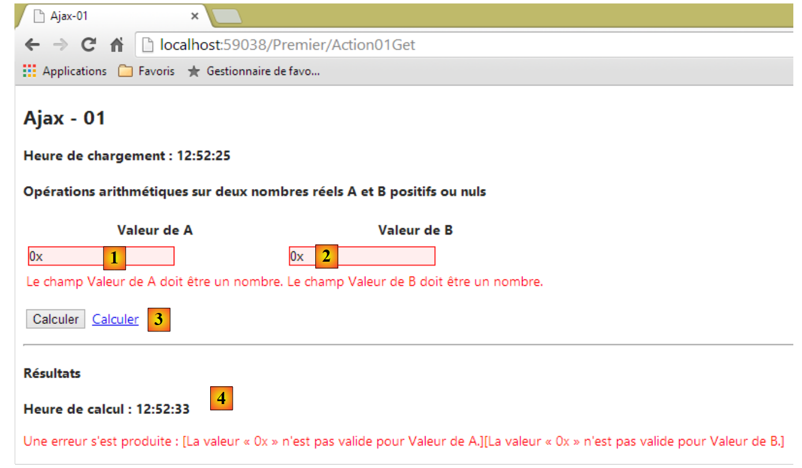 |
- در [1] و [2]، مقادیر نامعتبر وارد شدند. این موارد توسط اعتبارسنجهای سمت کلاینت علامتگذاری شدند؛
- در [3]، لینک [Calculer] کلیک شد؛
- در [4]، یک [POST] وجود داشت، در حالی که پاسخ دریافتی [4] است.
وقتی مقادیر نامعتبر هستند و دکمه [Calculer] کلیک میشود، درخواست [POST] به سرور ارسال نمیشود. در همین سناریو، با لینک [Calculer]، درخواست [POST] به سرور ارسال میشود. بنابراین، یک رفتار در دکمه [Calculer] وجود دارد که ما نتوانستهایم آن را با لینک [Calculer] بازتولید کنیم.
ما این مثال را در زمینهای جدید مجدداً بررسی خواهیم کرد: برنامه چندین نما خواهد داشت و از نوع [Application à Page Unique] است که همیناکنون توصیف کردیم.
7.6.1. نماها در مثال
این مثال چندین نما دارد:
 |
- در [1]، نمای [Action05Get]؛
- در [2]، نمای جزئی [Formulaire05]؛
- [3]، نمای جزئی [Failure05];
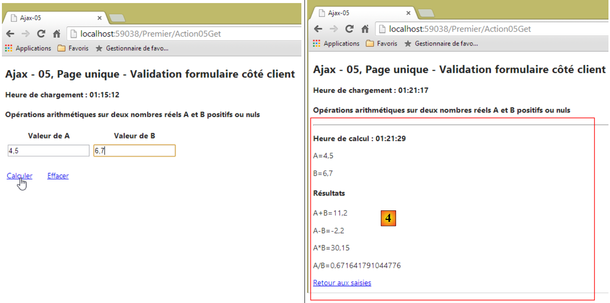 |
- در [4]، نمای جزئی [Success05].
این برنامه یک برنامهٔ تکصفحهای است: صفحه در اولین درخواست توسط مرورگر بارگذاری میشود. سپس از طریق فراخوانیهای Ajax بهروزرسانی میشود.
صفحات قبلی توسط نماهای زیر [cshtml] تولید میشوند:
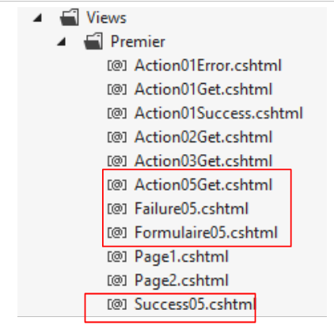 |
ویوی بارگذاریشده در ابتدا، ویوی زیر [Action05Get.cshtml] است:
@model Exemple_04.Models.ViewModel05
@{
Layout = null;
}
<!DOCTYPE html>
<html lang="fr-FR">
<head>
<meta name="viewport" content="width=device-width" />
<title>Ajax-05</title>
<link rel="stylesheet" href="~/Content/Site.css" />
<script type="text/javascript" src="~/Scripts/jquery-1.8.2.min.js"></script>
<script type="text/javascript" src="~/Scripts/jquery.validate.min.js"></script>
<script type="text/javascript" src="~/Scripts/jquery.validate.unobtrusive.min.js"></script>
<script type="text/javascript" src="~/Scripts/globalize/globalize.js"></script>
<script type="text/javascript" src="~/Scripts/globalize/cultures/globalize.culture.fr-FR.js"></script>
<script type="text/javascript" src="~/Scripts/globalize/cultures/globalize.culture.en-US.js"></script>
<script type="text/javascript" src="~/Scripts/jquery.unobtrusive-ajax.js"></script>
<script type="text/javascript" src="~/Scripts/myScripts-05.js"></script>
</head>
<body>
<h2>Ajax - 05, Page unique - Validation formulaire côté client</h2>
<p><strong>Heure de chargement : @Model.HeureChargement</strong></p>
<h4>Opérations arithmétiques sur deux nombres réels A et B positifs ou nuls</h4>
<img id="loading" style="display: none" src="~/Content/images/indicator.gif" />
<div id="content">
@Html.Partial("Formulaire05", Model)
</div>
</body>
</html>
لطفاً به نکات زیر توجه کنید:
- خط ۱: قالب نما از نوع [ViewModel05] است که به زودی در مورد آن بحث خواهیم کرد؛
- خطوط ۱۳–۱۹: این خطوط حاوی اسکریپتهای جاوااسکریپت مورد نیاز برای Ajax و اعتبارسنجی سمت کلاینت هستند؛
- خط ۲۰: ما توابع جاوااسکریپت خود را به [myScripts-05.js] اضافه خواهیم کرد؛
- خط ۲۷: تصویر متحرک بارگذاری؛
- خطوط ۲۸–۳۰: یک تگ ID به نام [content]. این تگ جایی است که ویوهای جزئی [Formulaire05, Success05, Failure05] در آن درج خواهند شد؛
- خط ۲۹: درج نمای جزئی [Formulaire05].
نما [Action05Get] مسئول نمایش بخش [1] از صفحهٔ اولیه است:
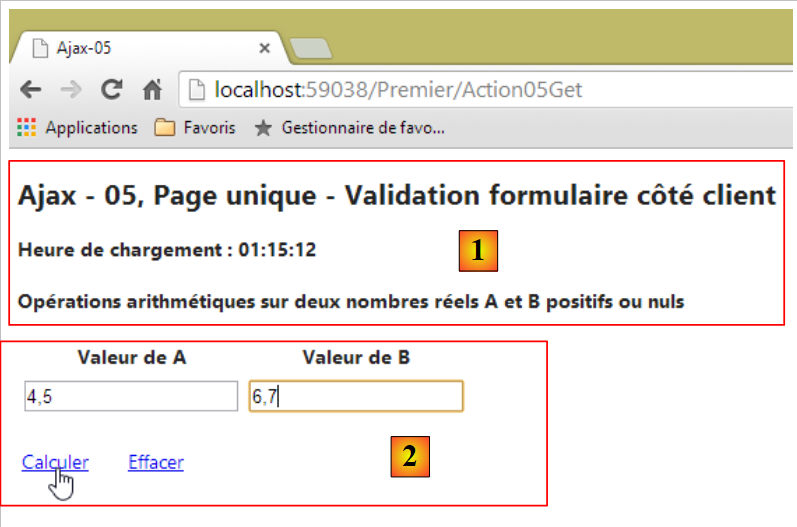 |
نما جزئی [Formulaire05] بخش [2] را که در بالا نشان داده شده است، تولید میکند. کد آن به شرح زیر است:
@model Exemple_04.Models.ViewModel05
@using (Html.BeginForm("Action05Post", "Premier", FormMethod.Post, new { id = "formulaire" }))
{
<table>
<thead>
<tr>
<th>@Html.LabelFor(m => m.A)</th>
<th>@Html.LabelFor(m => m.B)</th>
</tr>
</thead>
<tbody>
<tr>
<td>@Html.TextBoxFor(m => m.A)</td>
<td>@Html.TextBoxFor(m => m.B)</td>
</tr>
<tr>
<td>@Html.ValidationMessageFor(m => m.A)</td>
<td>@Html.ValidationMessageFor(m => m.B)</td>
</tr>
</tbody>
</table>
<p>
<table>
<tbody>
<tr>
<td><a href="javascript:calculer()">Calculer</a>
</td>
<td style="width: 20px" />
<td><a href="javascript:effacer()">Effacer</a>
</td>
</tr>
</tbody>
</table>
</p>
}
- خط ۱: نمای جزئی از نوع [ViewModel05] به عنوان قالب خود استفاده میکند؛
- خط ۳: فرم تولید شده توسط متد [Html.BeginForm]. از آنجایی که این فرم از طریق یک فراخوانی Ajax ارسال خواهد شد، سه پارامتر اول متد نادیده گرفته میشوند. مگر اینکه کاربر جاوااسکریپت را در مرورگر خود غیرفعال کرده باشد. ما در اینجا این احتمال را نادیده میگیریم. پارامتر چهارم مهم است. فرم دارای شناسه [formulaire] خواهد بود؛
- خطوط ۵–۲۲: فرم وارد کردن اعداد A و B؛
- خط ۲۷: یک لینک جاوااسکریپت که اجرای چهار عمل اصلی روی A و B را آغاز میکند؛
- خط ۳۰: یک لینک جاوااسکریپت که ورودیها و هرگونه پیام خطای مرتبط را پاک میکند.
توجه داشته باشید که این فرم دکمهای با نوع [submit] ندارد. ما باید مقادیر وارد شده برای A و B را به صورت دستی با استفاده از [Post] محاسبه کنیم.
اگر هیچ خطایی وجود نداشته باشد، نتایج نمایش داده میشوند:
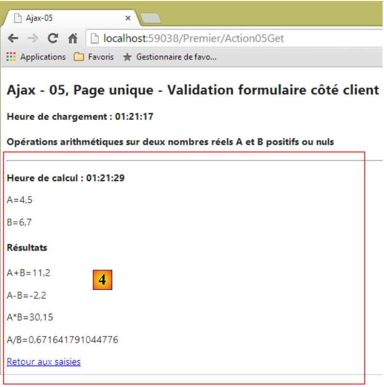 |
بخش [4] بالا توسط نمای جزئی زیر [Success05.cshtml] تولید میشود:
@model Exemple_04.Models.ViewModel05
<hr />
<p><strong>Heure de calcul : @Model.HeureCalcul</strong></p>
<p>A=@Model.A</p>
<p>B=@Model.B</p>
<h4>Résultats</h4>
<p>A+B=@Model.AplusB</p>
<p>A-B=@Model.AmoinsB</p>
<p>A*B=@Model.AmultipliéparB</p>
<p>A/B=@Model.AdiviséparB</p>
<p>
<a href="javascript:retourSaisies()">Retour aux saisies</a>
</p>
- خط ۱: نمای جزئی [Success05.cshtml] یک قالب از نوع [ViewModel05] دریافت میکند؛
- خط ۱۲: یک لینک جاوااسکریپت برای بازگشت به فیلدهای ورودی.
در صورت بروز خطا، نمای جزئی دیگری به نام [3] نمایش داده میشود:
 |
این نما توسط کد زیر تولید میشود: [Failure05.cshtml]:
@model Exemple_04.Models.ViewModel05
<hr />
<p><strong>Heure de calcul : @Model.HeureCalcul</strong></p>
<p>A=@Model.A</p>
<p>B=@Model.B</p>
<h2>Les erreurs suivantes se sont produites</h2>
<ul>
@foreach (string msg in Model.Erreurs)
{
<li>@msg</li>
}
</ul>
<p>
<a href="javascript:retourSaisies()">Retour aux saisies</a>
</p>
- خط ۱: نمای جزئی [Failure05.cshtml] یک قالب از نوع [ViewModel05] دریافت میکند؛
- خط ۱۴: یک لینک جاوااسکریپت برای بازگشت به فیلدهای ورودی.
7.6.2. قالب نما
تمام نماهای قبلی از همان قالب [ViewModel05] استفاده میکنند:
 |
using System;
using System.Collections.Generic;
using System.ComponentModel.DataAnnotations;
using System.Web.Mvc;
namespace Exemple_04.Models
{
[Bind(Exclude = "AplusB, AmoinsB, AmultipliéparB, AdiviséparB, Erreurs, HeureChargement, HeureCalcul")]
public class ViewModel05
{
// فرم
[Required(ErrorMessage="Donnée A requise")]
[Display(Name="Valeur de A")]
[Range(0, Double.MaxValue, ErrorMessage = "Tapez un nombre A positif ou nul")]
public string A { get; set; }
[Required(ErrorMessage = "Donnée B requise")]
[Display(Name = "Valeur de B")]
[Range(0, Double.MaxValue, ErrorMessage="Tapez un nombre B positif ou nul")]
public string B { get; set; }
// نتایج
public string AplusB { get; set; }
public string AmoinsB { get; set; }
public string AmultipliéparB { get; set; }
public string AdiviséparB { get; set; }
public List<string> Erreurs { get; set; }
public string HeureChargement { get; set; }
public string HeureCalcul { get; set; }
}
}
این قالب [ViewModel01] است که قبلاً با چند تفاوت جزئی ارائه شده است:
- خطوط ۱۵ و ۱۹: فیلدهای A و B اکنون از نوع [string] هستند تا هنگام نمایش اولیه فرم ورودی، به جای فیلدهایی با مقدار 0، فیلدهای خالی نمایش داده شوند؛
- خطوط 14 و 18: این کار مانع از بررسی مقدار وارد شده با استفاده از اعتبارسنج [Range] نمیشود؛
- خط ۲۶: فهرستی از پیامهای خطایی که توسط نمای [Failure05] نمایش داده میشوند.
7.6.3. دادههای دامنه [Session]
در بخش 7.3.6 دیدیم که دادههای جلسه در مدل زیر [SessionModel] محصور شده بود:
 |
using System;
namespace Exemple_03.Models
{
public class SessionModel
{
// تولیدکنندهٔ عدد تصادفی
public Random Randomizer { get; set; }
}
}
این قالب جلسه برای شامل کردن مقادیر A و B گسترش یافته است:
using System;
namespace Exemple_03.Models
{
public class SessionModel
{
// تولیدکنندهٔ اعداد تصادفی
public Random Randomizer { get; set; }
//مقادیر A و B
public string A { get; set; }
public string B { get; set; }
}
}
در واقع لازم است مقادیر A و B در جلسه ذخیره شوند، همانطور که در دنباله زیر نشان داده شده است:
درخواست ۱
 |
درخواست ۲
 |
در [4]، ورودیهای انجامشده در [1] را مییابیم. با این حال، دو درخواست متمایز وجود دارد: HTTP. ما میدانیم که وضعیت بین دو درخواست HTTP را جلسه (session) تشکیل میدهد. برای اینکه درخواست دوم بتواند مقادیری را که توسط درخواست اول ارسال شدهاند بازیابی کند، آن مقادیر باید در جلسه ذخیره شوند.
7.6.4. اقدام سرور [Action05Get]
اقدام [Action05Get] اقدامی است که صفحهٔ اولیهٔ تکصفحهای را نمایش میدهد. کد آن به شرح زیر است:
[HttpGet]
public ViewResult Action05Get()
{
ViewModel05 modèle = new ViewModel05();
modèle.HeureChargement = DateTime.Now.ToString("hh:mm:ss");
return View(modèle);
}
- خط ۶: نمای [Action05Get.cshtml]، که قبلاً بررسی کردهایم، با استفاده از یک قالب از نوع [ViewModel05] نمایش داده میشود؛
7.6.5. عمل مشتری [Calculer]
بیایید تعاملات کاربر با نماها را بررسی کنیم:
 |
لینک [1] یک لینک جاوااسکریپت است:
<a href="javascript:calculer()">Calculer</a>
تابع جاوااسکریپت [calculer] در فایل [myScripts-05.js] یافت میشود:
<script type="text/javascript" src="~/Scripts/myScripts-05.js"></script>
کد تابع جاوااسکریپت [calculer] به شرح زیر است:
// دادههای کلی
var content;
var loading;
function calculer() {
//ابتدا مراجع مربوط به DOM
var formulaire = $("#formulaire");
//سپس اعتبارسنجی فرم
if (!formulaire.validate().form()) {
// فرم نامعتبر – کامل
return;
}
//یک فراخوانی Ajax بهصورت دستی انجام میشود
$.ajax({
url: '/Premier/Action05FaireCalcul',
type: 'POST',
data: formulaire.serialize(),
dataType: 'html',
beforeSend: function () {
loading.show();
},
success: function (data) {
content.html(data);
},
complete: function () {
loading.hide();
},
error: function (jqXHR) {
//نمایش پاسخ سرور
content.html(jqXHR.responseText);
}
})
}
function retourSaisies() {
...
}
function effacer() {
...
}
// هنگامی که سند بارگذاری میشود
$(document).ready(function () {
// بازیابی ارجاعات برای اجزای مختلف صفحه
loading = $("#loading");
content = $("#content");
// تصویر متحرک مخفی میشود
loading.hide();
});
- شایان ذکر است که کد جاوااسکریپت همیشه در سمت کلاینت و درون مرورگر اجرا میشود؛
- خط ۴۴: تابع JS پس از اتمام بارگذاری اولیه صفحه واحد اجرا میشود؛
- خط ۴۶: ارجاع به تصویر متحرک با شناسه [loading]؛
- خط ۴۷: ارجاع به ناحیهای با شناسه [content]. این ناحیه است که نماهای جزئی [Formulaire05, Success05, Failure05] را دریافت میکند؛
- خطوط ۲–۳: متغیرهای خطوط ۴۶–۴۷ به صورت سراسری (global) تعریف شدهاند تا سایر توابع بتوانند به آنها دسترسی داشته باشند. جستجو برای عناصر در یک صفحه (خطوط ۴۶–۴۷) هزینه دارد. اگر بتوان از تکرار این جستجو اجتناب کرد، نیازی به تکرار آن نیست؛
- خط ۵: تابع [calculer];
- خط ۷: یک مرجع به فرم بازیابی میشود. نمای جزئی [Formulaire05] آن را با شناسه [formulaire]; مقداردهی کرده است؛
- خط ۹: این دستور اعتبارسنجهای سمت کلاینت فرم را اجرا میکند. این همان چیزی است که در ناهنجاری ذکرشده در صفحه ۱۸۳ وجود نداشت. این روش توسط کتابخانه [jquery.unobstrusive-ajax] که در یک صفحه واحد استفاده میشود، فراهم شده است:
<script type="text/javascript" src="~/Scripts/jquery.unobtrusive-ajax.js"></script>
این عبارت در صورتی که فرم نامعتبر اعلام شود، مقدار [false] را برمیگرداند؛
- خط ۱۱: اگر فرم نامعتبر باشد، فراخوانی Ajax به سرور انجام نمیشود؛
- خطوط ۱۴–۳۲: فراخوانی Ajax به سرور انجام میشود؛
- خط ۱۵: هدف URL، اقدام سرور [Action05FaireCalcul] است؛
- خط ۱۶: از طریق [POST] درخواست میشود؛
- خط ۱۷: مقادیر ارسالشده. اینها ورودیهای فرم هستند، در این مورد مقادیر A و B؛
- خطوط ۲۲–۲۴: اگر فراخوانی Ajax موفقیتآمیز باشد، تابع [calculer] ناحیه با شناسه [content] را با استفاده از جریان داده HTML که توسط سرور ارسال شده است، بهروزرسانی میکند.
این جریان داده HTML همان چیزی است که توسط اقدام [Action05FaireCalcul] که هدف فراخوانی Ajax است، ارسال میشود. کد این اقدام سمت سرور به شرح زیر است:
[HttpPost]
public PartialViewResult Action05FaireCalcul(FormCollection postedData, SessionModel session)
{
// قالب
ViewModel05 modèle = new ViewModel05();
//زمان محاسبه
modèle.HeureCalcul = DateTime.Now.ToString("hh:mm:ss");
// قالب را بهروزرسانی میکند
TryUpdateModel(modèle, postedData);
if (!ModelState.IsValid)
{
//خطا را برمیگرداند
modèle.Erreurs = getListOfMessagesFor(ModelState);
return PartialView("Failure05", modèle);
}
...
}
- خط ۱: این اکشن تنها یک [post] را میپذیرد؛
- خط ۲: یک نمای جزئی را بازمیگرداند؛
- خط ۲: مقادیر ارسالشده (postedData) و مدل جلسه (session) را بهعنوان پارامتر دریافت میکند؛
- خط ۵: قالب نمای جزئی ایجاد میشود؛
- خط ۷: با زمان محاسبه بهروزرسانی میشود؛
- خط ۹: تلاشی برای اعمال مقادیر ارسالشده بر روی مدل انجام میشود. سپس اعتبارسنجهای مدل اجرا خواهند شد. ممکن است این سؤال پیش بیاید که چرا وقتی اعتبارسنجهای سمت کلاینت از ارسال POST در صورتی که دادههای واردشده نامعتبر باشند جلوگیری میکنند، ما این زحمت را به خود میدهیم. در واقع، ما مطمئن نیستیم که خطای POST از کجا ناشی میشود. ممکن است توسط کدی تولید شده باشد که متعلق به ما نیست. بنابراین، ما باید همیشه بررسیهای سمت سرور را انجام دهیم؛
- خط ۱۰: بررسی میکنیم که آیا اعتبارسنجها با موفقیت انجام شدهاند؛
- خط ۱۳: اگر قالب معتبر نباشد، با فهرستی از خطاها بهروزرسانی میشود. ما وارد جزئیات روش داخلی [getListOfMessagesFor] نخواهیم شد که مشابه روش [GetErrorMessagesFor] توصیفشده در صفحهٔ ۶۵ است؛
- خط 14: نمای جزئی [Failure05] همراه با قالب خود نمایش داده میشود. در اینجا کد این نما آمده است؛
@model Exemple_04.Models.ViewModel05
<hr />
<p><strong>Heure de calcul : @Model.HeureCalcul</strong></p>
<p>A=@Model.A</p>
<p>B=@Model.B</p>
<h2>Les erreurs suivantes se sont produites</h2>
<ul>
@foreach (string msg in Model.Erreurs)
{
<li>@msg</li>
}
</ul>
<p>
<a href="javascript:retourSaisies()">Retour aux saisies</a>
</p>
- خطوط ۷–۱۲: فهرست خطاهای قالب با استفاده از تگ نمایش داده میشود.
به یاد داشته باشید که تابع JS [calculer]، که استکه از [Post] در اقدام سرور [Action05FaireCalcul] منشأ گرفته است، این جریان HTML را در منطقهای با شناسه [content] قرار میدهد. این منجر به چیزی شبیه به این میشود:
 |
بیایید بررسی کد برای اقدام [Action05FaireCalcul] را ادامه دهیم:
[HttpPost]
public PartialViewResult Action05FaireCalcul(FormCollection postedData, SessionModel session)
{
// قالب
ViewModel05 modèle = new ViewModel05();
...
//مقادیر A و B در جلسه تنظیم شدهاند
session.A = modèle.A;
session.B = modèle.B;
// تا کنون هیچ خطایی رخ نداده است
List<string> erreurs = new List<string>();
// در هر بار دیگر، یک خطا شبیهسازی میشود
int val = session.Randomizer.Next(2);
if (val == 0)
{
erreurs.Add("[erreur aléatoire]");
}
if (erreurs.Count != 0)
{
modèle.Erreurs = erreurs;
return PartialView("Failure05", modèle);
}
//محاسبات
double A = double.Parse(modèle.A);
double B = double.Parse(modèle.B);
modèle.AplusB = string.Format("{0}", A + B);
modèle.AmoinsB = string.Format("{0}", A - B);
modèle.AmultipliéparB = string.Format("{0}", A * B);
modèle.AdiviséparB = string.Format("{0}", A / B);
// نمایش
return PartialView("Success05", modèle);
}
- خط ۷: قالب معتبر اعلام شده است؛
- خطوط ۸–۹: مقادیر وارد شده برای A و B در جلسه (session) ذخیره میشوند. ما میخواهیم بتوانیم آنها را در پرسوجوی بعدی بازیابی کنیم؛
- خطوط ۱۱–۲۲: یک خطا به صورت تصادفی هر بار دیگر ایجاد میشود؛
- خطوط ۲۴–۲۹: چهار عمل اصلی بر روی اعداد حقیقی وارد شده انجام میشود؛
- خط ۳۱: نمای جزئی [Success05] به همراه مدل آن بازگردانده میشود. این نمای جزئی به شرح زیر است:
@model Exemple_04.Models.ViewModel05
<hr />
<p><strong>Heure de calcul : @Model.HeureCalcul</strong></p>
<p>A=@Model.A</p>
<p>B=@Model.B</p>
<h4>Résultats</h4>
<p>A+B=@Model.AplusB</p>
<p>A-B=@Model.AmoinsB</p>
<p>A*B=@Model.AmultipliéparB</p>
<p>A/B=@Model.AdiviséparB</p>
<p>
<a href="javascript:retourSaisies()">Retour aux saisies</a>
</p>
به یاد داشته باشید که تابع JS [calculer]، که استمبدأ [Post] در عمل سرور [Action05FaireCalcul] این جریان HTML را در منطقهای با شناسه [content] قرار میدهد. این منجر به چیزی شبیه به این میشود:
 |
7.6.6. اقدام کلاینت [Effacer]
پیوند جاوا اسکریپت [Effacer] فرم را به وضعیت اولیه خود بازمیگرداند:
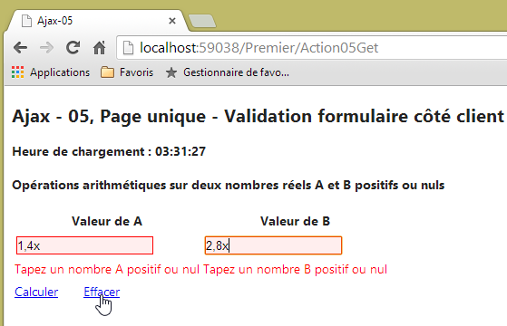 |  |
در فرم، لینک JS [Effacer] به صورت زیر تعریف شده است:
<a href="javascript:effacer()">Effacer</a>
تابع JS [effacer] در فایل [myScripts-05.js] به صورت زیر تعریف شده است:
// دادههای کلی
var content;
var loading;
function calculer() {
...
}
function retourSaisies() {
...
}
function effacer() {
//ابتدا ارجاعات در DOM
var formulaire = $("#formulaire");
var A = $("#A");
var B = $("#B");
// ارزشهای معتبر به ورودیها اختصاص دهید
A.val("0");
B.val("0");
//سپس فرم برای پاک کردن ارسال میشود
// هرگونه پیام خطا
formulaire.validate().form();
//سپس رشتههای خالی را به فیلدهای ورودی اختصاص دهید
A.val("");
B.val("");
}
// وقتی سند بارگذاری میشود
$(document).ready(function () {
// مراجع اجزای مختلف صفحه را بازیابی میکند
loading = $("#loading");
content = $("#content");
// ما تصویر متحرک را مخفی میکنیم
loading.hide();
});
- خطوط ۱۵–۱۷: ارجاعات به عناصر مختلف DOM (مدل شیء مستند) بازیابی میشوند؛
- خطوط ۱۹–۲۰: مقادیر معتبر در فیلدهای ورودی برای اعداد A و B وارد میشوند؛
- خط ۲۳: اعتبارسنجهای سمت کلاینت را اجرا میکنیم. از آنجایی که مقادیر A و B معتبر هستند، این کار باعث میشود هرگونه پیام خطایی که ممکن است نمایش داده شود، ناپدید شود؛
- خطوط ۲۵–۲۶: رشتههای خالی در فیلدهای ورودی برای اعداد A و B وارد میشوند؛
7.6.7. اقدام سمت کلاینت [Retour aux Saisies]
لینک جاوااسکریپت [Retour aux Saisies] به شما امکان میدهد پس از دریافت نتایج به فرم بازگردید:
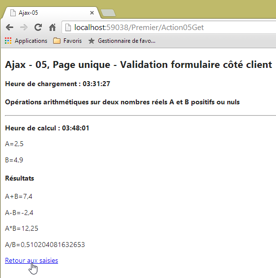 |  |
در فرم، لینک JS [Retour aux Saisies] به صورت زیر تعریف شده است:
<a href="javascript:retourSaisies()">Retour aux saisies</a>
تابع JS [retourSaisies] در فایل [myScripts-05.js] به صورت زیر تعریف شده است:
// دادههای جهانی
var content;
var loading;
function calculer() {
...
}
function retourSaisies() {
// یک فراخوانی Ajax بهصورت دستی انجام میشود
$.ajax({
url: '/Premier/Action05RetourSaisies',
type: 'POST',
dataType: 'html',
beforeSend: function () {
loading.show();
},
success: function (data) {
content.html(data);
},
complete: function () {
loading.hide();
//IMPORTANT !! اعتبارسنجی
$.validator.unobtrusive.parse($("#formulaire"));
},
error: function (jqXHR) {
content.html(jqXHR.responseText);
}
})
}
function effacer() {
...
}
// در بارگذاری سند
$(document).ready(function () {
// استخراج ارجاعات برای اجزای مختلف صفحه
loading = $("#loading");
content = $("#content");
// ما تصویر متحرک را مخفی میکنیم
loading.hide();
});
- خطوط ۱۱–۲۹: یک فراخوانی Ajax؛
- خط ۱۲: هدف URL;
- خط ۱۳: این توسط یک فرمان HTTP POST درخواست خواهد شد. این یک POST بدون هیچ پارامتر POST است. به همین دلیل هیچ خطی از نوع زیر وجود ندارد:
در فراخوانی Ajax؛
- خط ۱۴: پاسخ مورد انتظار از سرور یک پاسخ HTML است؛
- خطوط ۱۸–۲۰: این استریم HTML برای بهروزرسانی منطقهای با شناسه [content] استفاده خواهد شد؛
عمل سرور [Action05RetourSaisies] به شرح زیر است:
[HttpPost]
public PartialViewResult Action05RetourSaisies(SessionModel session)
{
// نما
return PartialView("Formulaire05", new ViewModel05() { A = session.A, B = session.B });
}
- خط ۲: این عمل به عنوان پارامتر، قالب جلسه را دریافت میکند که در آن قبلاً مقادیر وارد شده برای A و B را ذخیره کرده بودیم؛
- خط ۵: نمای جزئی [Formulaire05] با مدلی از نوع [ViewModel05] بازگردانده میشود، که در آن دقت شده است فیلدهای A و B با مقادیر A و B که از جلسه گرفته شدهاند، مقداردهی اولیه شوند؛
اکنون بیایید به کد تابع جاوااسکریپت [retourSaisies] بازگردیم:
function retourSaisies() {
// به صورت دستی یک فراخوانی Ajax انجام دهید
$.ajax({
url: '/Premier/Action05RetourSaisies',
type: 'POST',
dataType: 'html',
beforeSend: function () {
loading.show();
},
success: function (data) {
content.html(data);
},
complete: function () {
loading.hide();
//IMPORTANT !! اعتبارسنجی
$.validator.unobtrusive.parse($("#formulaire"));
},
error: function (jqXHR) {
content.html(jqXHR.responseText);
}
})
}
- خط ۱۳: متدی که هنگام تکمیل فراخوانی Ajax اجرا میشود؛
- خط ۱۴: تصویر بارگذاری متحرک پنهان میشود؛
- خط ۱۶: قطعهای کد که کمی مبهم بود و بهصورت آنلاین برای حل مشکل زیر پیدا شد: در فرم نمایشدادهشده توسط لینک [Retour aux saisies]، اعتبارسنجهای سمت کلاینت دیگر کار نمیکردند. در حین جستجوی اطلاعات درباره کتابخانههای JS و [jquery.unobtrusive-ajax]، راهحل را در خط 16 پیدا کردم. این خط فرم را تجزیه میکند، شاید برای فعالسازی اعتبارسنجهای سمت کلاینت.
7.7. دسترسیپذیر کردن یک برنامه ASP.NET در اینترنت
به بخش 9.26 مراجعه کنید.
7.8. تولید یک برنامه بومی اندروید از یک برنامه تکصفحهای APU
به بخش 9.27 مراجعه کنید.